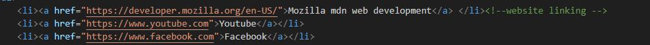
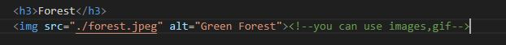
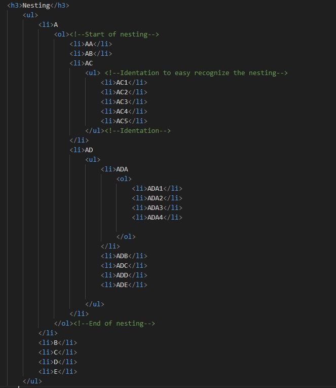
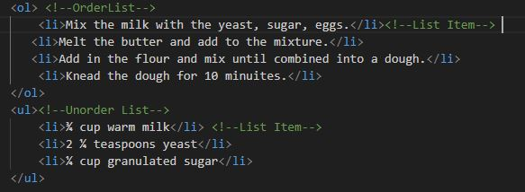

Section 3 - Anchor Elements, Image, nesting, Order and Unorder List
Anchor Elements Code:

Output:
List of Website
Images HTML Code:

Output:

Nesting HTML Code:

Output:
- A
- AA
- AB
- AC
- AD
- ADA
- ADA1
- ADA2
- ADA3
- ADA4
- ADB
- ADC
- ADD
- ADE
- B
- C
- D
- E
Order and Unorder List Code:

Output:
OrderList
- Mix the milk with the yeast, sugar, eggs.
- Melt the butter and add to the mixture.
- Add in the flour and mix until combined into a dough.
- Knead the dough for 10 minuites.
UnorderList
- ¾ cup warm milk
- 2 ¼ teaspoons yeast
- ¼ cup granulated sugar